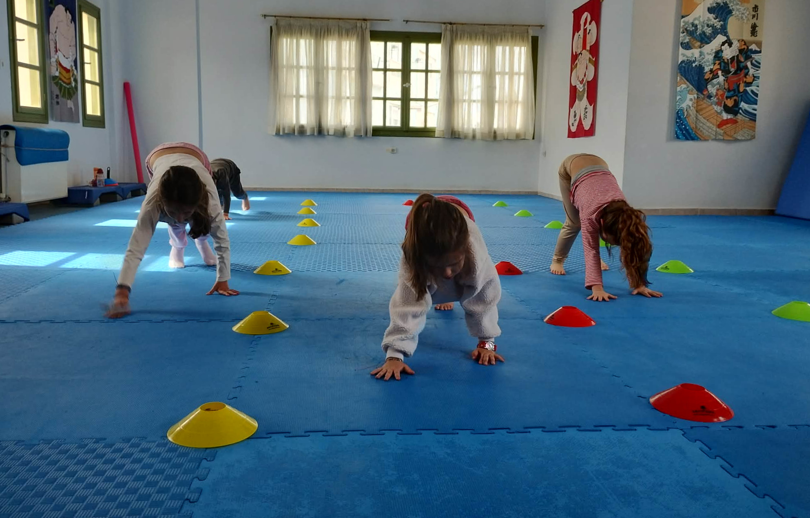

Γιατί το Sumo κάνει τα μικρά παιδιά πιο υπεύθυνα
Η συμμετοχή στο Sumo για παιδιά δεν είναι απλώς μια δραστηριότητα με πάλη ή παιχνίδι. Κάθε μάθημα αποτελεί ένα εργαστήρι ζωής και συμπεριφοράς, στο οποίο τα παιδιά μαθαίνουν κανόνες, πειθαρχία και υπευθυνότητα — δεξιότητες που θα τους συνοδεύουν σε όλη τους τη ζωή.
Στο τμήμα μας, κάθε άσκηση, κάθε παιχνίδι και κάθε τεχνική έχει ένα σκοπό πέρα από το παιχνίδι: να καλλιεργήσει σωστές συνήθειες, σεβασμό και αυτοπειθαρχία.
Η σημασία των κανόνων
Στο τμήμα Sumo:
- Κάθε παιδί μαθαίνει να ακολουθεί οδηγίες με ακρίβεια για ασκήσεις, παιχνίδια και τεχνικές. Τα μικρά παιδιά δυσκολεύονται να ακολουθήσουν τους κανόνες, μολονότι τους γνωρίζουν. Με την παιδαγωγική μέθοδο του προπονητή, το κάθε παιδί καταλαβαίνει ότι μόνο όταν εφαρμόζονται οι κανόνες, το παιχνίδι έχει νόημα.
- Η τήρηση των κανόνων είναι απαραίτητη για την ασφάλεια όλων των παιδιών, ιδιαίτερα στις πτώσεις και στα παιχνίδια ενδυνάμωσης.
- Μαθαίνουν ότι οι πράξεις τους έχουν συνέπειες — όχι μόνο για τους ίδιους, αλλά και για τους συμμαθητές τους.
Παράδειγμα από τις προπονήσεις μας: Ο Γιαννάκης, στις πρώτες προπονήσεις, δεν ακολουθούσε πάντα τις οδηγίες και συχνά χανόταν στις ασκήσεις. Μέσα σε δύο εβδομάδες, με καθοδήγηση, κατάφερε να εκτελεί τις ασκήσεις με ακρίβεια και συνέπεια, χωρίς συνεχείς διορθώσεις. Αυτό δεν είναι μόνο πρόοδος στο άθλημα, αλλά και μάθημα υπευθυνότητας: κάθε ενέργεια έχει αποτέλεσμα.
Πειθαρχία μέσα από το παιχνίδι
Η πειθαρχία στο Sumo δεν είναι βαρετή ή αυστηρή. Αντίθετα, τα παιδιά διασκεδάζουν ενώ μαθαίνουν:
- Παιχνίδια όπως ο «Καρχαρίας», η «Σμέρνα» ή ο «Χιονάνθρωπος» ενισχύουν την ανάγκη να ακολουθούν κανόνες για να πετύχουν τον στόχο τους. Τα παιχνίδια αυτά είναι δημιουργίες του προπονητή και μαθαίνουν στα παιδιά συγκεκριμένες κινητικές δεξιότητες.
- Μαθαίνουν να περιμένουν τη σειρά τους, να συνεργάζονται με άλλα παιδιά και να τηρούν οδηγίες για τη σωστή εκτέλεση της άσκησης.
- Η σταθερή ρουτίνα των προπονήσεων δημιουργεί αίσθηση ασφάλειας και συνέπειας, βοηθώντας τα παιδιά να εμπιστεύονται το περιβάλλον τους και να αισθάνονται άνετα.
Υπευθυνότητα: Μαθαίνεται μέσα από εμπειρία
Η υπευθυνότητα δεν έρχεται μόνο από την τήρηση των κανόνων:
- Τα παιδιά μαθαίνουν να φροντίζουν τον εξοπλισμό τους και τον χώρο προπόνησης: φοράνε μόνα τα υποδήματά τους, φέρουν νερά, ζητάνε άδεια, τηρούν την εθιμοτυπία και μαζεύουν τον εξοπλισμό.
- Αναπτύσσουν σεβασμό για τους άλλους και μαθαίνουν να μην επηρεάζουν αρνητικά το παιχνίδι των συμμαθητών τους.
- Αναλαμβάνουν μικρές, αλλά σημαντικές αποφάσεις, όπως ποιος θα εκτελέσει πρώτος μια άσκηση ή πώς να βοηθήσουν κάποιο παιδί που δυσκολεύεται.
Παράδειγμα: Όταν ένα παιδί εκτελεί σωστά μια άσκηση, ο προπονητής το επιβραβεύει και τα άλλα παιδιά παρατηρούν για να αντιγράψουν την κίνηση. Συχνά το παιδί διορθώνει μόνο του τον διπλανό του, αναπτύσσοντας υπευθυνότητα και ομαδικό πνεύμα.
Κοινωνική ανάπτυξη μέσω πειθαρχίας
Η τήρηση κανόνων και η πειθαρχία ενισχύουν κοινωνικές δεξιότητες:
- Μαθαίνουν να ακούν τους άλλους, να περιμένουν τη σειρά τους και να δίνουν προσοχή στις οδηγίες.
- Όταν δεν καταλαβαίνουν κάτι, έχουν το θάρρος να ρωτήσουν και αν αδικηθούν, να διεκδικήσουν.
- Η συνεργασία σε ζευγάρια ή ομάδες διδάσκει σεβασμό και αλληλοβοήθεια.
- Οι μικρές νίκες, οι επιβραβεύσεις και τα χειροκροτήματα ενισχύουν την αυτοεκτίμηση και την κοινωνική αλληλεπίδραση.
Παράδειγμα: Στο παιχνίδι “Καρχαρίας”, τα παιδιά που αρχικά έτρεχαν ασυντόνιστα, πλέον συντονίζονται και περιμένουν το σήμα του προπονητή. Κάθε παιδί έχει το δικό του σημείο στην αίθουσα, μαθαίνοντας συνεργασία και κοινωνική αντίληψη.
Πειθαρχία και καθημερινή ζωή
Η πειθαρχία που μαθαίνουν στο Sumo έχει αντίκτυπο και στο σπίτι ή στο σχολείο:
- Μαθαίνουν να τηρούν ρουτίνες.
- Κατανοούν τη σημασία των κανόνων και των συνεπειών.
- Μαθαίνουν να αναλαμβάνουν ευθύνες για πράξεις τους.
Οι γονείς μπορούν να ενισχύσουν αυτήν τη μάθηση με απλά βήματα:
- Συζητήστε καθημερινά τι έμαθε το παιδί στην προπόνηση.
- Ενθαρρύνετε την εφαρμογή των κανόνων και στο σπίτι.
- Επιβραβεύστε προσπάθεια και συνέπεια, όχι μόνο αποτέλεσμα.
Τα μαθήματα του Sumo για τη ζωή
Συμπερασματικά, το Sumo δεν είναι μόνο άθλημα — είναι εργαλείο ανάπτυξης δεξιοτήτων ζωής:
- Κανόνες → ασφάλεια & σεβασμός
- Πειθαρχία → αυτοέλεγχος & συνεργασία
- Υπευθυνότητα → αυτονομία & κοινωνική ωριμότητα
Το παιδί που μαθαίνει να σέβεται κανόνες, να ακολουθεί οδηγίες και να συνεργάζεται με τους άλλους, αναπτύσσει συνήθειες που θα το βοηθούν σε κάθε πτυχή της ζωής του.
Συμπέρασμα
Το Sumo για παιδιά συνδυάζει:
- Ασφάλεια
- Παιχνίδι και διασκέδαση (τα παιδιά θεωρούν φυσιολογικό το σπρώξιμο, το τράβηγμα και την πτώση)
- Εκμάθηση σημαντικών αξιών όπως πειθαρχία, κανόνες και υπευθυνότητα
Μέσα από τις προπονήσεις, τα παιδιά δεν μαθαίνουν μόνο τεχνικές, αλλά καλλιεργούν δεξιότητες ζωής που θα τους συνοδεύουν στο σχολείο, στο σπίτι και στην κοινωνία.

Εικόνα με βηματισμό κάμπιας, Α.Σ. Εν Σώματι
- Τα παιδιά χρησιμοποιούν χέρια, ώμους, κορμό και πόδια ταυτόχρονα. Mαθαίνουν να συντονίζουν τα άκρα τους, κάτι που βελτιώνει τον κινητικό τους έλεγχο.
- Αναπτύσσεται η μυϊκή ισορροπία και η αντοχή, ειδικά στον κορμό και τους ώμους, που είναι σημαντικά για πτώσεις και σπρωξίματα στο Sumo.
- Το σώμα κινείται χαμηλά και ελεγχόμενα, πράγμα που ενισχύει τη σταθερότητα του σώματος.
Μαθαίνουν να κρατούν τον κορμό σφιχτό και ευέλικτο κατά τη διάρκεια κινήσεων.
- Ο βηματισμός πρέπει να εκτελείται με συγκεκριμένη σειρά κινήσεων. Πρώτα 3 κινήσεις με τα χέρια, έπειτα 3 κινήσεις με τα πόδια.
- H άσκηση προετοιμάζει τα παιδιά για πιο σύνθετες κινήσεις στο Sumo: σπρωξίματα, πτώσεις και ελιγμούς